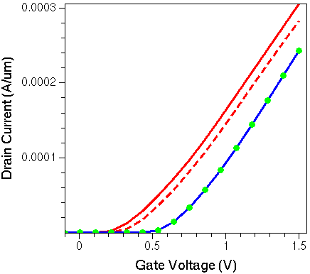

Sentaurus Device
10. Running Sentaurus Device in Sentaurus Workbench
10.1 Overview
10.2 File Section
10.3 Using Sentaurus Workbench Parameters
10.4 Arithmetic Expressions
10.5 Including Files
10.6 Parameterized Sentaurus Device Parameter Files
Objectives
- To understand how Sentaurus Device runs in Sentaurus Workbench.
10.1 Overview
This section discusses running Sentaurus Device in Sentaurus Workbench, which is the framework tool where parameterized simulation projects using various TCAD tools, including Sentaurus Device, are organized and executed.
For more information, see the Sentaurus Workbench module.
This section highlights the changes that a Sentaurus Device standalone command file requires to use the most relevant Sentaurus Workbench preprocessing capabilities.
The example in this section, sdevice_des.cmd, represents a typical command file of Sentaurus Device to be executed in Sentaurus Workbench.
Click to view the command file sdevice_des.cmd.
The complete project can be investigated from within Sentaurus Workbench in the directory Applications_Library/GettingStarted/sdevice/SOI_IdVg.
To check out the project, start Sentaurus Workbench and copy the SOI_IdVg project to a local directory. The target directory must reside under the Sentaurus Workbench working directory to which the environment variable $STDB points. For details about this environment variable, see Section 1.2 Starting Sentaurus Workbench.
In this section, the parts of the command file specific to Sentaurus Workbench preprocessing are highlighted in red and discussed. See Section 1.2 Command File for a detailed description of most of the file.
10.2 File Section
In standalone applications, the File section specifies the input and output files of the simulation (see Section 1.2.1 File Section). When Sentaurus Device runs in Sentaurus Workbench, these specifications are performed using the predefined Sentaurus Workbench file-name placeholders, such as:
File {
*-Predefined SWB parameters
Grid = "@tdr@"
Plot = "@tdrdat@"
Current = "@plot@"
Output = "@log@"
Param = "@parameter@"
}
During preprocessing, Sentaurus Workbench replaces these placeholders with actual file names that are determined by the following rules.
For the input file @tdr@, Sentaurus Workbench searches the simulation tree for a previous node in which a device structure is generated, typically by Sentaurus Structure Editor or Sentaurus Mesh. Sentaurus Workbench then replaces the placeholders in the current node with the device structure found in the previous node. These structures are, in general, named nNR_msh.tdr, where NR is the node number at which the structure was generated. In this project, the meshed structure n2_msh.tdr is generated at node number 2 (Sentaurus Mesh output).
If Sentaurus Device is the first tool in the tool flow, the input files must be specified explicitly.
For the output files @tdrdat@, @plot@, and @log@, Sentaurus Workbench uses the current node number to expand these placeholders to, for example, n10_des.tdr, n10_des.plt, and n10_des.log (here, 10 represents one of the actual node numbers for Sentaurus Device in the project).
For the @parameter@ file, Sentaurus Workbench looks for a parameter file with the name sdevice.par. Sentaurus Workbench preprocesses this file into, for example, pp10_des.par and then expands the @parameter@ placeholder accordingly.
In standalone simulations, the parameter file can have any name. When running under Sentaurus Workbench, however, you must use the name sdevice.par. Otherwise, the parameter file is not preprocessed.
10.3 Using Sentaurus Workbench Parameters
Sentaurus Workbench parameters are defined in the tool flow (see the Sentaurus Workbench module). To refer to a Sentaurus Workbench parameter in the Sentaurus Device command file, enclose the parameter name in double @ signs.
10.3.1 Numeric Sentaurus Workbench Parameters
Solve {
NewCurrentPrefix="init"
Coupled(Iterations=100){ Poisson }
Coupled{ Poisson Electron Hole }
Quasistationary(
InitialStep=1e-1 Increment=1.2
Minstep=1e-5 MaxStep=0.1
Goal{ Name="drain" Voltage= @Vd@ }
){ Coupled{ _EQUATIONS_ } }
NewCurrentPrefix=""
Quasistationary(
DoZero
InitialStep=5e-2 Increment=1.5
Minstep=1e-5 MaxStep=0.05
Goal{ Name="gate" Voltage= @Vdd@ }
){ Coupled{ _EQUATIONS_ }
*-Arithmetic with variables: enforcing ~0.1V steps for all values of Vdd
CurrentPlot( Time=(Range=(0 1) Intervals=@<int(Vdd/0.1)>@ )
)
}
}
The Sentaurus Workbench project is set up to simulate the Id–Vg characteristics of an SOI MOSFET for low-drain bias (Vd = 0.05 V) and for high-drain bias (Vd = 1.5 V). In Sentaurus Workbench, the parameter Vd is introduced in the tool flow, and the values 0.05 V and 1.5 V are assigned to this parameter.
In the command file of Sentaurus Device, this parameter is used in the initial Quasistationary section to bias the drain to the respective bias. During preprocessing, Sentaurus Workbench replaces this parameter with the real nodal value of the parameter as assigned in the tool flow.
10.3.2 String-Valued Sentaurus Workbench Parameters
Electrode {
{ Name="source" Voltage= 0.0 Resistor= 40 }
{ Name="drain" Voltage= 0.0 Resistor= 40 }
{ Name="gate" Voltage=-0.1 }
{ Name="substrate" Voltage= 0.0 }
*-Conditional inclusion of code:
#if [string compare @Body@ "Tied"] == 0
{ Name="bodytie" Voltage=0.0 eRecVelocity=0 }
#endif
}
The Sentaurus Workbench project is set up to simulate both body-tied and floating-body SOI devices. In Sentaurus Workbench, a parameter Body is introduced in the tool flow and is assigned one of two possible values: Tied and Floating.
In the command file of Sentaurus Device, a conditional statement #if/#endif is included in the Electrode section, which checks the assigned value of the parameter using the [string compare ...] Tcl function and includes the body contact in the Electrode section only for the body-tied device simulations.
10.3.3 Conditional Local Variables
*-Conditional setting of local variables: #if @Vd@ < 0.1 #define _TRANSMOD_ * DriftDiffusion #define _DRIVINGFORCE_ GradQuasiFermi #define _B2BAVAL_ * No band-to-band and impact ionization #define _EQUATIONS_ Poisson Electron Hole #else #define _TRANSMOD_ Hydrodynamics( eTemperature ) #define _DRIVINGFORCE_ CarrierTempDrive #define _B2BAVAL_ Band2Band(E2) Avalanche(CarrierTempDrive) #define _EQUATIONS_ Poisson Electron Hole eTemperature #endif*...
Physics {
*-Using local variables:
_TRANSMOD_
eQCvanDort
EffectiveIntrinsicDensity( OldSlotboom )
Recombination( SRH(DopingDep) )
}
Physics(Material="Silicon") {
Mobility(
PhuMob
eHighFieldsaturation( _DRIVINGFORCE_ )
hHighFieldsaturation( GradQuasiFermi )
Enormal
)
Recombination(
SRH( DopingDep )
_B2BAVAL_
)
}
*...
Solve {
NewCurrentPrefix="init"
Coupled(Iterations=100){ Poisson }
Coupled{ Poisson Electron Hole }
Quasistationary(
InitialStep=1e-1 Increment=1.2
Minstep=1e-5 MaxStep=0.1
Goal{ Name="drain" Voltage= @Vd@ }
){ Coupled{ _EQUATIONS_ } }
NewCurrentPrefix=""
Quasistationary(
DoZero
InitialStep=5e-2 Increment=1.5
Minstep=1e-5 MaxStep=0.05
Goal{ Name="gate" Voltage= @Vdd@ }
){ Coupled{ _EQUATIONS_ }
*-Arithmetic with variables: enforcing ~0.1V steps for all values of Vdd
CurrentPlot( Time=(Range=(0 1) Intervals=@<int(Vdd/0.1)>@ )
)
}
}
The command file is parameterized such that a drift-diffusion simulation is performed for low-drain bias, and a hydrodynamic simulation is used for high-drain bias.
The #if ... #else ... #endif preprocessor directives assign different values to the local variables, depending on the nodal value of the Sentaurus Workbench parameter Vd.
Then, macro variables _TRANSMOD_, _DRIVINGFORCE_, _B2BAVAL_, and _EQUATIONS_ are used in various sections of the command file of Sentaurus Device. Note that the preprocessor performs a simple string-replacing operation.
To avoid unintended replacements, the local variables are protected by underscores, which are not required but are recommended.
10.3.4 Global Parameters
*-Setting global variable: #set Vdd 1.5
...
Solve {
NewCurrentPrefix="init"
Coupled(Iterations=100){ Poisson }
Coupled{ Poisson Electron Hole }
Quasistationary(
InitialStep=1e-1 Increment=1.2
Minstep=1e-5 MaxStep=0.1
Goal{ Name="drain" Voltage= @Vd@ }
){ Coupled{ _EQUATIONS_ } }
NewCurrentPrefix=""
Quasistationary(
DoZero
InitialStep=5e-2 Increment=1.5
Minstep=1e-5 MaxStep=0.05
Goal{ Name="gate" Voltage= @Vdd@ }
){ Coupled{ _EQUATIONS_ }
*-Arithmetic with variables: enforcing ~0.1V steps for all values of Vdd
CurrentPlot( Time=(Range=(0 1) Intervals=@<int(Vdd/0.1)>@ )
)
}
}
Global variables (for example, Vdd) are defined using the #set preprocessor directive. While local variables (defined by #define) are visible inside the given tool input file only, global variables are accessible from any tool in the tool flow, when they are declared.
For example, the Vdd global variable defined at the start of the file is used both here in the Sentaurus Device input and later in the Sentaurus Visual input. When defined, global variables can be used like standard Sentaurus Workbench variables.
Global variables also can be changed at runtime. See Section 8.2 Project Variables for details on how to work with Sentaurus Workbench global variables.
10.4 Arithmetic Expressions
Solve {
NewCurrentPrefix="init"
Coupled(Iterations=100){ Poisson }
Coupled{ Poisson Electron Hole }
Quasistationary(
InitialStep=1e-1 Increment=1.2
Minstep=1e-5 MaxStep=0.1
Goal{ Name="drain" Voltage= @Vd@ }
){ Coupled{ _EQUATIONS_ } }
NewCurrentPrefix=""
Quasistationary(
DoZero
InitialStep=5e-2 Increment=1.5
Minstep=1e-5 MaxStep=0.05
Goal{ Name="gate" Voltage= @Vdd@ }
){ Coupled{ _EQUATIONS_ }
*-Arithmetic with variables: enforcing ~0.1V steps for all values of Vdd
CurrentPlot( Time=(Range=(0 1) Intervals=@<int(Vdd/0.1)>@ )
)
}
}
Arithmetic expressions of Sentaurus Workbench are enclosed in @<...>@ pairs,
for example,
@<int(Vdd/0.1)>@.
Arithmetic expressions can contain variables. They are evaluated automatically during Sentaurus Workbench preprocessing.
10.5 Including Files
As previously mentioned, Sentaurus Workbench preprocesses the Sentaurus Device parameter file only if it is called sdevice.par. However, it might be advantageous to maintain a separate parameter file for each material or region for better readability and then to include all the parameter files in the sdevice.par file using the #include preprocessor directive.
Click to view the parameter file sdevice.par.
For example, the parameter file sdevice.par includes the following #include clause:
Material = "Silicon" {
#include "@pwd@/Silicon.par"
}
When multiple Sentaurus Device instances are used in a single project, it is sometimes useful to have an individual parameter file for each tool instance. Sentaurus Workbench supports individual parameter files whose file names are formed by the tool instance name, followed by the standard extension <tool_name>_des.par.
To create a new Sentaurus Device instance parameter file, the Create Parameter File dialog box is available, where you can select materials for inclusion in the parameter file, available in the Sentaurus Device material database (MaterialDB), to be used in simulations.
For a detailed description, see the Sentaurus Workbench module, Section 7.2 Customizing Tool Input File.
10.6 Parameterized Sentaurus Device Parameter Files
All the techniques discussed regarding parameterization in Sentaurus Workbench also can be applied to the Sentaurus Device parameter file.
AvalancheFactors
{ * Coefficients for avalanche generation with hydro
* Factors n_l_f, p_l_f for energy relaxation length in the expressions
* for effective electric field for avalanche generation
* eEeff = eEeff / n_l_f ( or b = b*n_l_f )
* hEeff = hEeff / p_l_f ( or b = b*p_l_f )
* Additional coefficients n_gamma, p_gamma, n_delta, p_delta
* n_l_f = 1 # [1]
* p_l_f = 1 # [1]
n_l_f = @AvalFac@ # [1]
p_l_f = @AvalFac@ # [1]
n_gamma = 1 # [1]
p_gamma = 1 # [1]
n_delta = 1.5 # [1]
p_delta = 1.5 # [1]
}
The Sentaurus Workbench parameter AvalFac is defined in the tool flow and is used in the parameter file Silicon.par.
Click to view the parameter file Silicon.par.
Two values, 1 and 1.5, are assigned to the parameters and are used in the simulation of the high-drain bias Id–Vg characteristics of an SOI MOSFET.
Like other Sentaurus Workbench parameters used in the command file, these parameters are replaced with their assigned values during Sentaurus Workbench preprocessing.

Figure 1. Drain current as a function of drain voltage at Vds = 1.5 V for different Sentaurus Workbench simulation splits: floating-body SOI NMOSFET (red curves) and corresponding body-tied device (blue line and green dots). Changing the AvalFac value from 1 (solid lines) to 1.5 (dashed line and green dots) does not affect the body-tied device. However, for the floating-body SOI, a change in the impact ionization rate alters the body potential and the current level.
Copyright © 2022 Synopsys, Inc. All rights reserved.